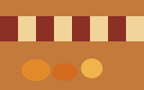

Copperplate Darkroom · Roll 26 · Tri-X 400

Read the source
contact_sheet_controller.js— steps through frames on left and rightframes/— the six proof frames- This page's source — filmstrip, filters, importmap, and controller registration